Data: Clarity and Blur
PyCon Colombia 2023
Catherine Devlin
2023-06-09
https://github.com/catherinedevlin/talks/
@catherinedevlin@tech.lgbt
Chelnik, the PostgreSQL elephant
Quipu

Data comes first

type: int
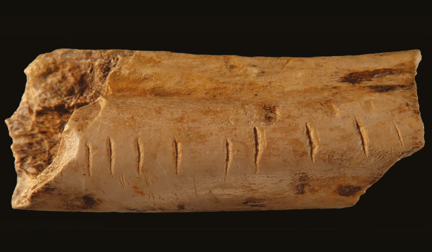So where is it?
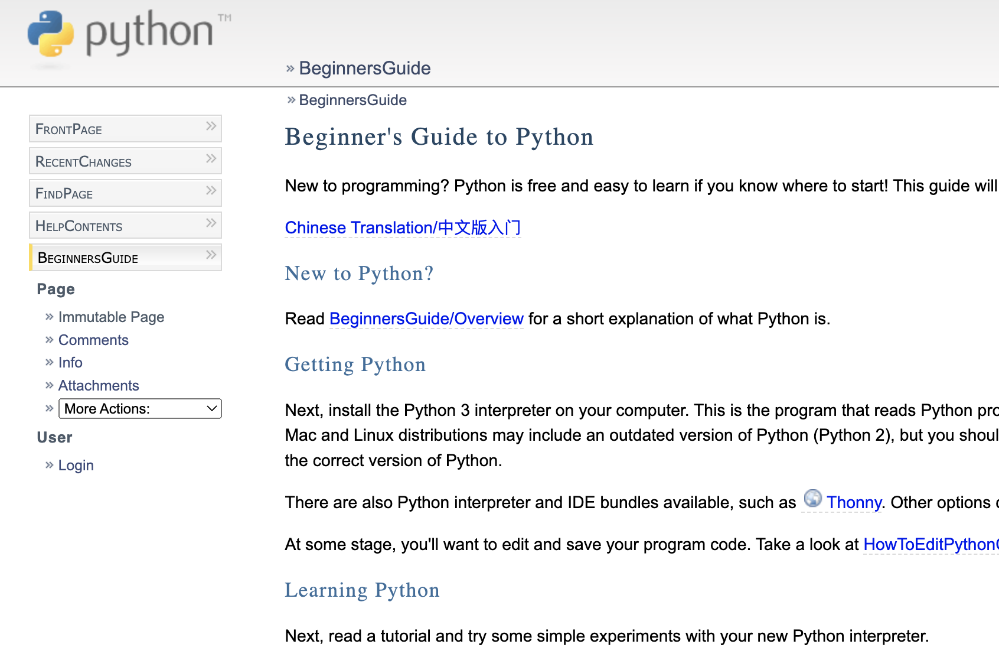Zen violation
There should be one– and preferably only one –obvious way to do it.
Clarity and blur
Clarity: about categories
Blur: between categories
Relationships
| nombre | diám_km | dia_d |
| Mercurio Venus Tierra Marte Júpiter | 4878 12100 12756 6794 142800 | 58.65 243.0 1.0 1.03 0.41 |
Data from Royal Museums Greenwich
Not data
Venus
224.7 días
Now it’s data
Venus orbita alrededor del sol en 224,7 días.
Table tells us the relationships
| nombre | diám_km | dia_d |
| Mercurio Venus Tierra Marte Júpiter | 4878 12100 12756 6794 142800 | 58.65 243.0 1.0 1.03 0.41 |
Shapes of relationships
Key:Value
Key-value access
import dbm
with dbm.open('período_sideral_d.dbm', 'c') as db:
db['Marte'] = str(686.98)
with dbm.open('período_sideral_d.dbm') as db:
print(db['Marte'])b'686.98'Shelve
import shelve
with shelve.open('planetas_shelf') as db:
db['Marte'] = {'diám_km': 6794, 'año_d': 686.98}
print(db['Marte']['diám_km'])6794Procedural “query”
with shelve.open('planetas.shelve.db') as db:
for planeta, planeta_info in db.items():
for luna in planeta_info['lunas']:
if (luna['diám_km'] or 0) > 2000:
print (planeta, luna['nombre'], luna['diám_km'])[('Saturno', 'Titán', 5150.0),
('Tierra', 'Luna', 3476.0),
('Júpiter', 'Io', 3652.0),
('Júpiter', 'Europa', 3138.0),
('Júpiter', 'Ganímedes', 5262.0),
('Júpiter', 'Calisto', 4800.0),
('Neptuno', 'Tritón', 3500.0)]Document query DSLs
MongoDB query-by-example
Elastic query 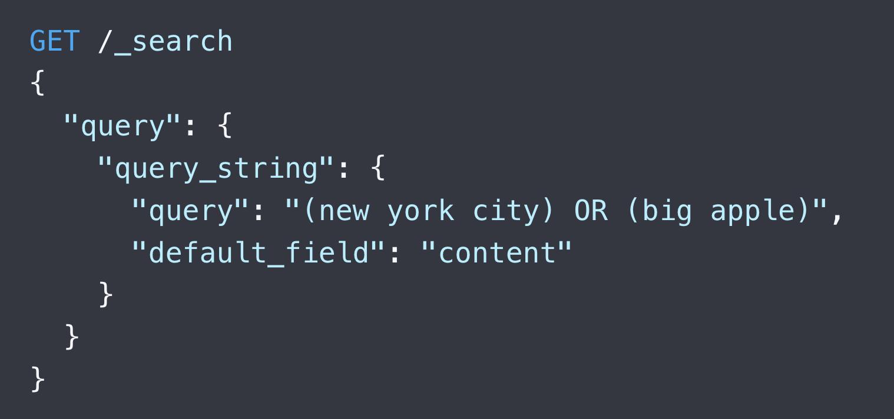
jq
[{'nombre': 'Mercurio', 'mes': []},
{'nombre': 'Venus', 'mes': []},
{'nombre': 'Tierra', 'mes': [27.322]},
{'nombre': 'Marte', 'mes': [0.319, 1.262]},
{'nombre': 'Júpiter',
'mes': [0.295, 0.298, 0.498, 0.675, ...Rectangles
| nombre | diám_km | dia_d |
| Mercurio Venus Tierra Marte Júpiter | 4878 12100 12756 6794 142800 | 58.65 243.0 1.0 1.03 0.41 |
Dataframes
686.98| máx_ua | diám_km | año_d | |
|---|---|---|---|
| Júpiter | 5.45 | 142800 | 4331.86 |
| Saturno | 10.07 | 120000 | 10760.3 |
| Urano | 20.09 | 52400 | 30684.7 |
| Neptuno | 30.32 | 48400 | 60189.5 |
Pandas, Polars, agate, Dask, Ray, Modin, more
Joins: why
| nombre | masa_t | luna |
| Mercurio Venus Tierra | 0.06 0.82 1.0 | None None Luna |
uh-oh
| nombre | masa_t | luna_1 | luna_2 |
| Mercurio Venus Tierra Marte | 0.06 0.82 1.0 0.11 | None None Luna Deimos | None None Luna Deimos |
denormalized
| nombre | masa_t | luna |
| Mercurio Venus Tierra Marte Marte | 0.06 0.82 1.0 0.11 0.11 | None None Luna Deimos Fobos |
Si, es tan mala
| nombre | masa_t | luna |
| Mercurio Venus Tierra Marte Marte Júpiter Júpiter Júpiter Júpiter Júpiter Júpiter Júpiter Júpiter Júpiter Júpiter Júpiter Júpiter Júpiter Júpiter Júpiter Júpiter | 0.06 0.82 1.0 0.11 0.11 317.89 317.89 317.89 317.89 317.89 317.89 317.89 317.89 317.89 317.89 317.89 317.89 317.89 317.89 317.89 317.89 | None None Luna Deimos Fobos Adrastea Amaltea Ananké Calisto Carmen Elara Europa Ganímedes Himalaya Io Leda Lisitia Metis Pasifae Sinope Thebe |
Normalize
| nombre | masa_t |
| Mercurio Venus Tierra Marte | 0.06 0.82 1.0 0.11 |
| nombre | planeta |
| Luna Fobos Deimos | Tierra Marte Marte |
Joining DataFrames
| planeta | masas_t | |
|---|---|---|
| Luna | Tierra | 1 |
| Fobos | Marte | 0.11 |
| Deimos | Marte | 0.11 |
| Metis | Júpiter | 317.89 |
| Adrastea | Júpiter | 317.89 |
| Amaltea | Júpiter | 317.89 |
| Thebe | Júpiter | 317.89 |
SQL
SELECT p.nombre AS planeta,
p.diám_km AS planeta_d_km,
l.nombre AS luna,
l.diámetro_media_km AS luna_d_km
FROM Planetas p
JOIN lunas l ON (l.planeta = p.nombre)
WHERE l.diámetro_media_km > 2000| planeta | planeta_d_km | luna | luna_d_km |
| Tierra Júpiter Júpiter Júpiter Júpiter Saturno Neptuno | 12756 142800 142800 142800 142800 120000 48400 | Luna Io Europa Ganímedes Calisto Titán Tritón | 3476.0 3652.0 3138.0 5262.0 4800.0 5150.0 3500.0 |
Documents too
Raw SQL from Python
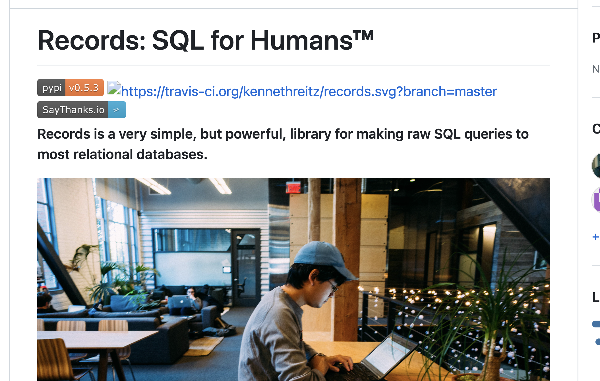ORMs
Object-Relational Mappers
engine = sa.create_engine('sqlite:///planetas.db')
with sa.orm.Session(engine) as session:
stmt = sa.select(Planeta).where(Planeta.diám_km < 50000)
for planeta in session.execute(stmt).scalars():
for luna in planeta.lunas:
print(f'{luna.nombre} orbita a {planeta.nombre} '
f'en posición {luna.pos}')
Luna orbita a Tierra en posición I
Fobos orbita a Marte en posición I
Deimos orbita a Marte en posición II
Náyade orbita a Neptuno en posición III
Thalassa orbita a Neptuno en posición IV
Despina orbita a Neptuno en posición V
Galatea orbita a Neptuno en posición VI
Larisa orbita a Neptuno en posición VII
Proteo orbita a Neptuno en posición VIII
Tritón orbita a Neptuno en posición I
Nereida orbita a Neptuno en posición II
Caronte orbita a Plutón en posición IBoilerplate
class Base(DeclarativeBase):
pass
class Planeta(Base):
__tablename__ = "planetas"
nombre: Mapped[str] = mapped_column(primary_key=True)
mín_ua: Mapped[float] = mapped_column(Float)
máx_ua: Mapped[Optional[float]] = mapped_column(Float, nullable=True)
mín_ua: Mapped[Optional[float]] = mapped_column(Float, nullable=True)
incl_orb_g: Mapped[Optional[float]] = mapped_column(Float, nullable=True)
diám_km: Mapped[int] = mapped_column(Integer)
obl: Mapped[float] = mapped_column(Float)
masas_t: Mapped[float] = mapped_column(Float)
incl_g: Mapped[int] = mapped_column(Integer)
año_d: Mapped[Optional[float]] = mapped_column(Float, nullable=True)
día_h: Mapped[float] = mapped_column(Float)
lunas: Mapped[List["Luna"]] = relationship(
back_populates="planeta"
)
def __str__(self):
return self.nombre
class Luna(Base):
__tablename__ = "lunas"
nombre: Mapped[str] = mapped_column(primary_key=True)
pos: Mapped[str] = mapped_column(String)
rev_d: Mapped[float] = mapped_column(Float)
diám_km: Mapped[Optional[float]] = mapped_column(Float, nullable=True)
dist_km: Mapped[float] = mapped_column(Float)
planeta_nombre: Mapped[str] = mapped_column(ForeignKey("planetas.nombre"))
planeta: Mapped["Planeta"] = relationship(back_populates="lunas",)Define tables once
- ORM first, then
Base.metadata.create_all(engine) - DDL first, then
metadata.reflect(bind=engine)
More concise ORMs
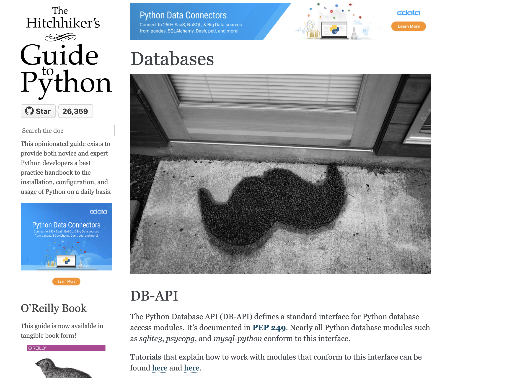{fig-alt=“Hitchhikers’ Guide to Python Databases page”)
Query builders
import pypika as pk
planetas, lunas = pk.Tables('planetas', 'lunas')
q = (pk.Query
.select(lunas.star, planetas.diám_km)
.from_(planetas)
.join(lunas)
.on(planetas.nombre == lunas.planeta_nombre)
.where(planetas.diám_km < 60000)
.where(lunas.diám_km > 100)
)
print(q)SELECT "lunas".*,"planetas"."diám_km"
FROM "planetas"
JOIN "lunas" ON "planetas"."nombre"="lunas"."planeta_nombre"
WHERE "planetas"."diám_km"<60000 AND "lunas"."diám_km">100Composable
q = (pk.Query
.from_(planetas)
.where(planetas.diám_km < 60000)
.join(lunas)
.on(planetas.nombre == lunas.planeta_nombre)
.select(lunas.star, planetas.diám_km, )
.where(lunas.diám_km > 100)
)
print(q)SELECT "lunas".*,"planetas"."diám_km"
FROM "planetas" JOIN "lunas"
ON "planetas"."nombre"="lunas"."planeta_nombre"
WHERE "planetas"."diám_km"<60000
AND "lunas"."diám_km">100PugSQL
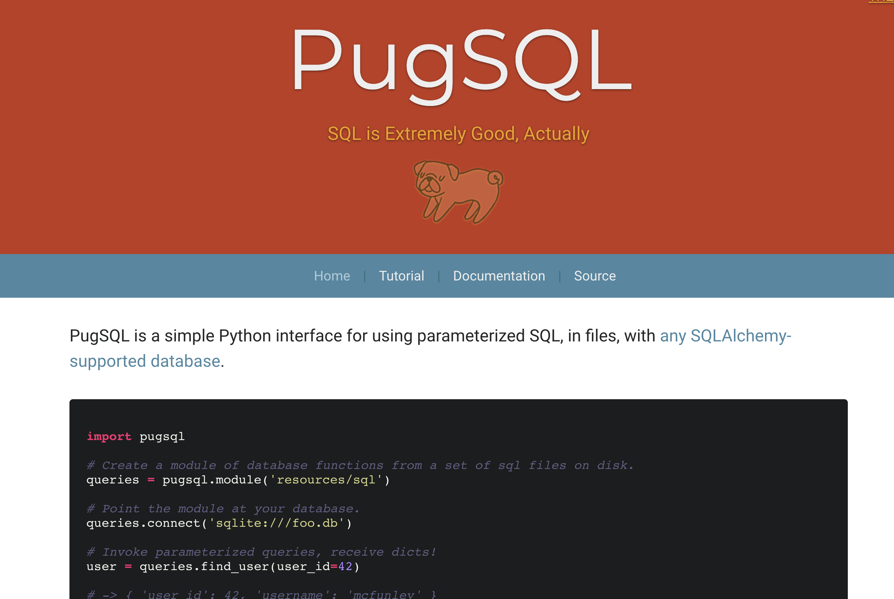Graph
Breaking boundaries
- Data paradigm / shape
- Query
- Storage
PostgreSQL JSON type
Cross-paradigm hosting
Database of one class acts as another
Graphs without a graph database
SQLite

Simplicity
| one machine | distributed | |
|---|---|---|
| in memory | SQLite | Apache Ignite |
| single file | SQLite | rqlite |
| server-managed | PostgreSQL | CockroachDB |
- No server
- Python Standard Library support
SQLite for Application Files
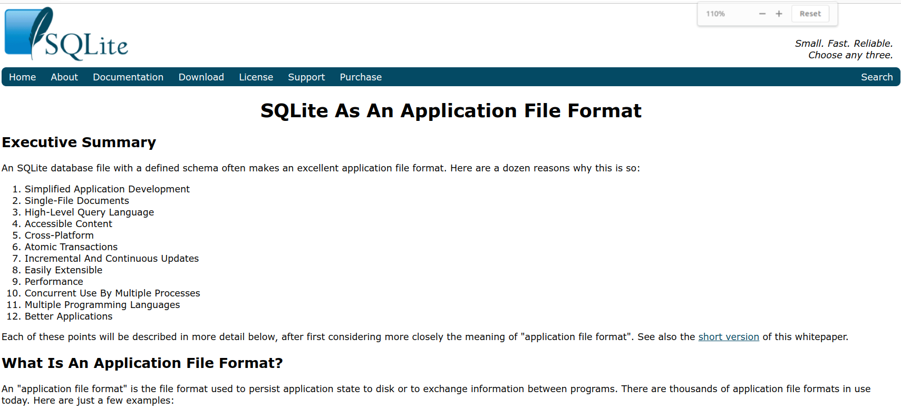Document: SQLite As An Application File Format
Simple != Weak
Baked data
Simon Willison: The Baked Data architectural pattern
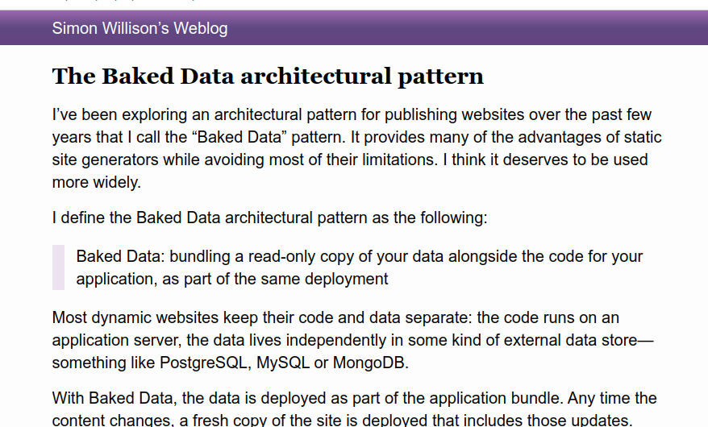Datasette
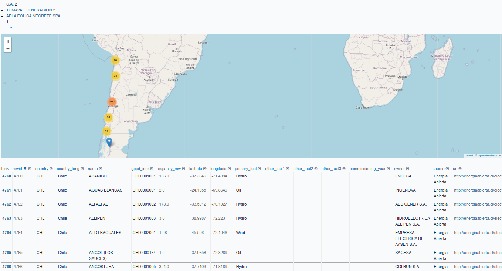Datasette-lite
Cross-paradigm SQLite
- SQLite as a document database
- simple-graph
- FTS5: full-text for search
Data Federation
Stop thinking about where data is hosted
PostgreSQL Foreign Data Wrappers
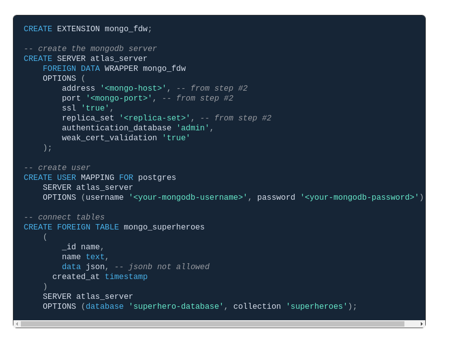Cloud storage / big data
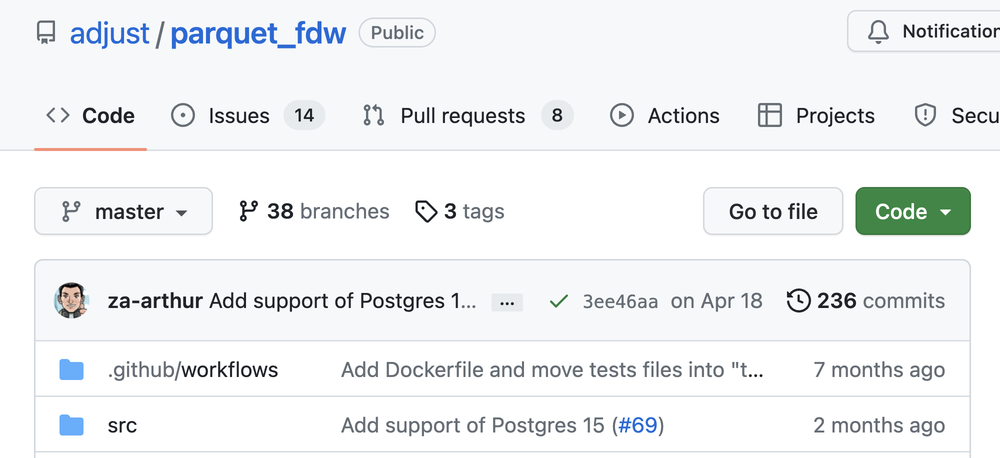Many many wrappers…
SQL (itself) gets everywhere
SQL to Pandas
JupySQL
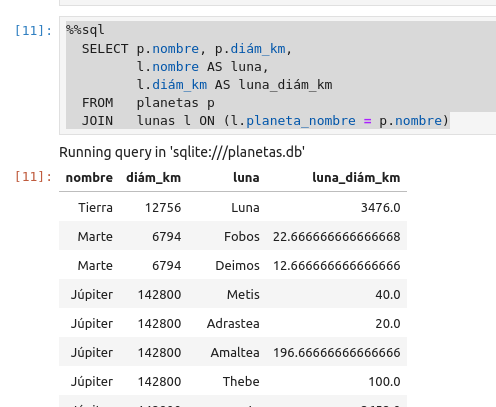JupySQL to Pandas
%%sql result <<
SELECT p.nombre, p.diám_km,
l.nombre AS luna,
l.diám_km AS luna_diám_km
FROM planetas p
JOIN lunas l ON (l.planeta_nombre = p.nombre)
result.DataFrame()SQL for Big Data
- File formats like Parquet, Avro, ORC
- Engines for access: Apache Spark, Presto, DuckDB, Apache Drill…
dbt: SQL for ETL
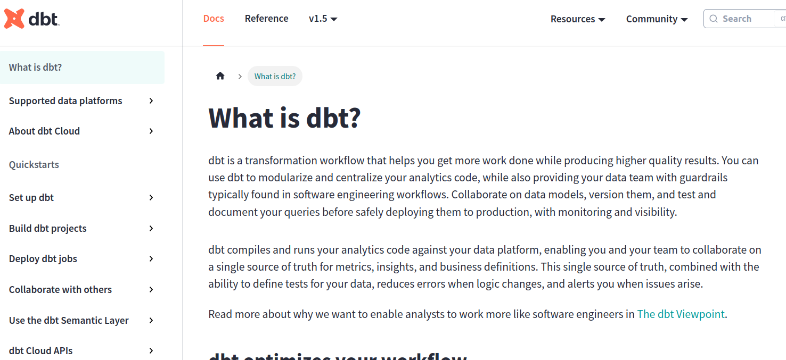Family members
SQLite -> rqlite, DuckDB
PostgreSQL -> CockroachDB, Crunchy, Yugabyte, Supabase…
Order vs. Freedom
JSON Schema
{
"$schema": "https://json-schema.org/draft/2020-12/schema",
"$id": "https://example.com/product.schema.json",
"title": "Product",
"description": "A product from Acme's catalog",
"type": "object",
"properties": {
"productId": {
"description": "The unique identifier for a product",
"type": "integer"
}
},
"required": [ "productId" ]
}Dataclasses / attrs
SQLAlchemy 2.0 - dataclass
and (attrs, Pydantic)
Laziness
Mock data
From Pydantic / dataclasses: Polyfactory
From JSON Schema: jsf
datamodel-codegen
datamodel-codegen --input planetas.csv --input-file-type csv --output-model-type dataclasses.dataclass# generated by datamodel-codegen:
# filename: planetas.csv
# timestamp: 2023-06-05T01:41:29+00:00
from __future__ import annotations
from dataclasses import dataclass
@dataclass
class Model:
nombre: str
mín_ua: str
máx_ua: str
incl_orb_g: str
diám_km: str
obl: str
masas_t: str
incl_g: str
año_d: str
día_h: strAutomated converters
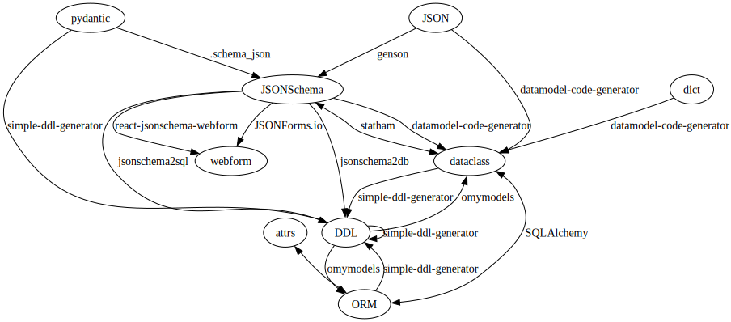Clarity please
Units: put them in field names!
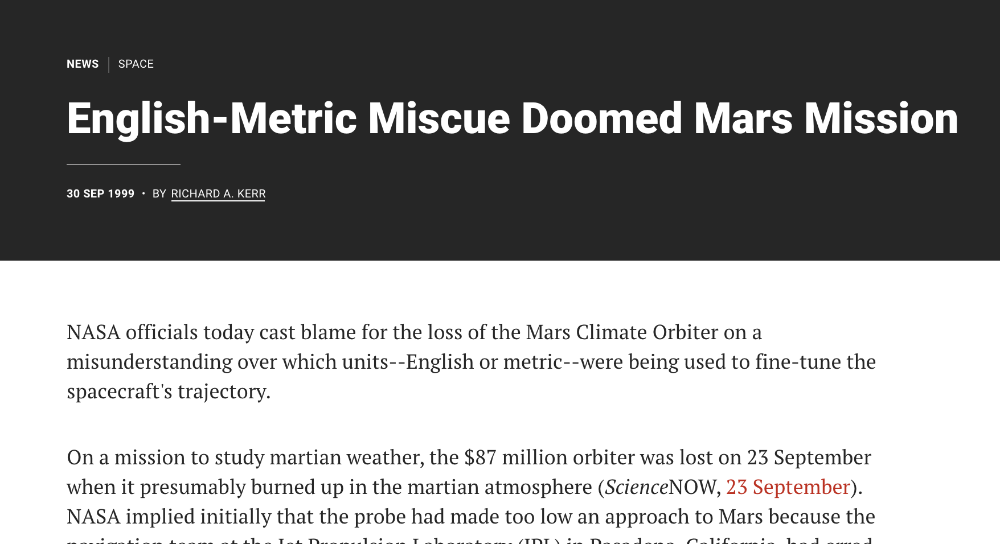SQL comments
COMMENT ON COLUMN planetas.día_h IS 'período de rotación, en horas'Quipu redux
Open Khipu
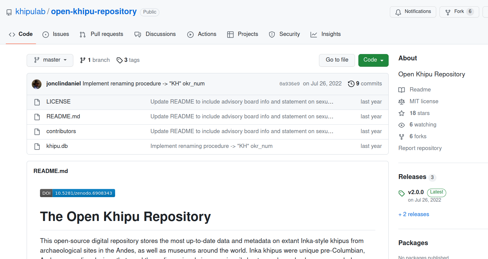Datasette-Lite for quipu
https://github.com/catherinedevlin/talks/